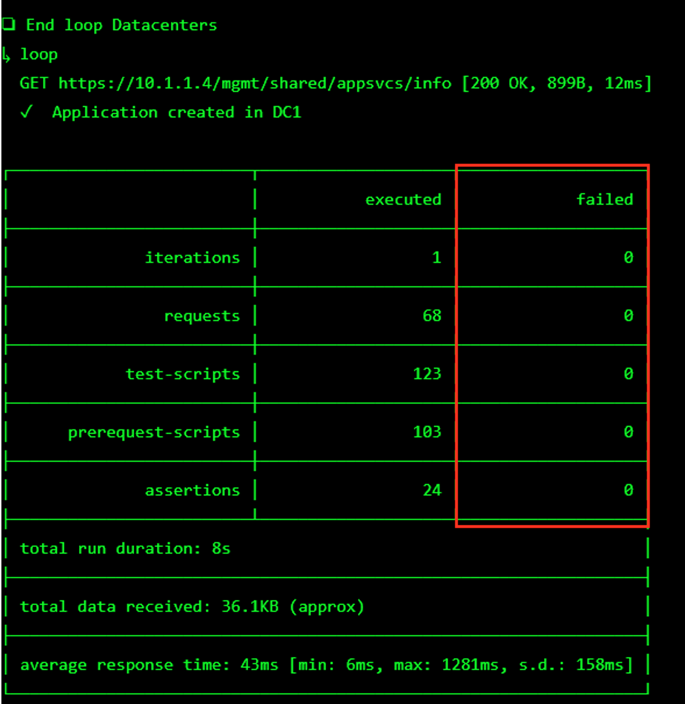
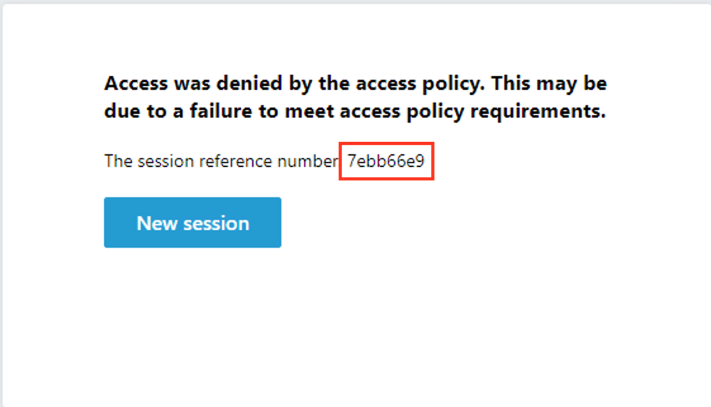
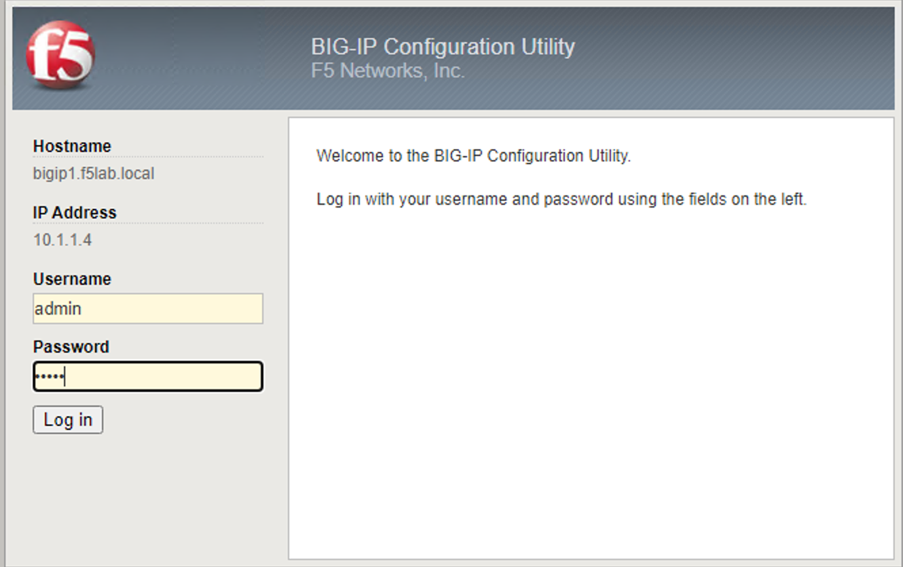
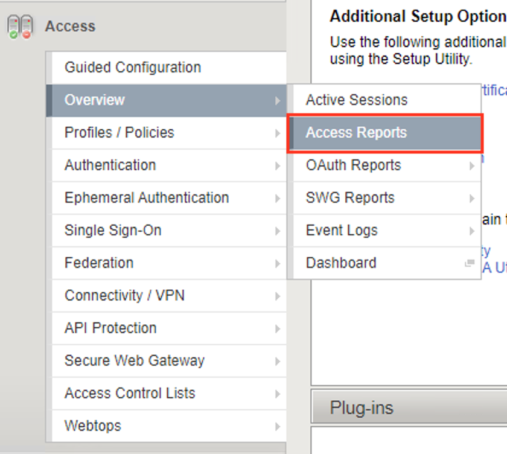
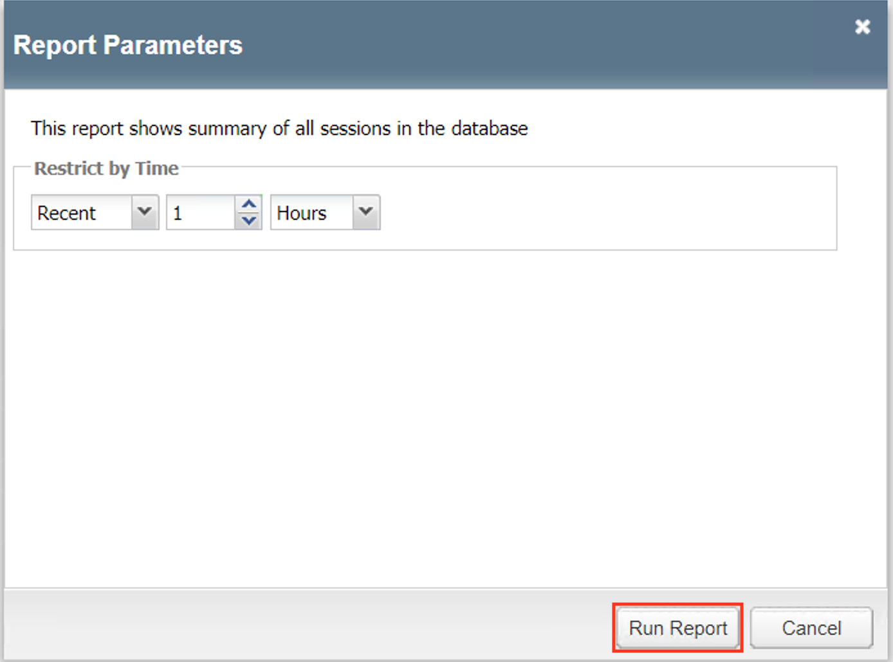
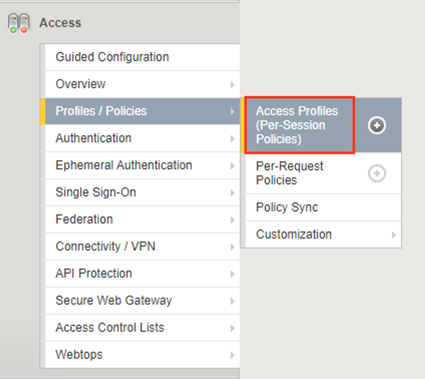
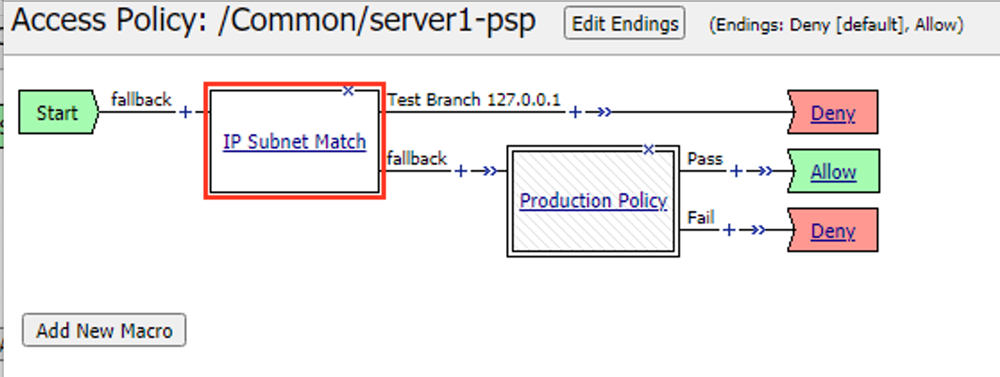
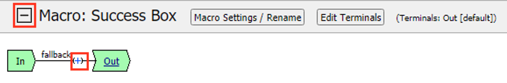
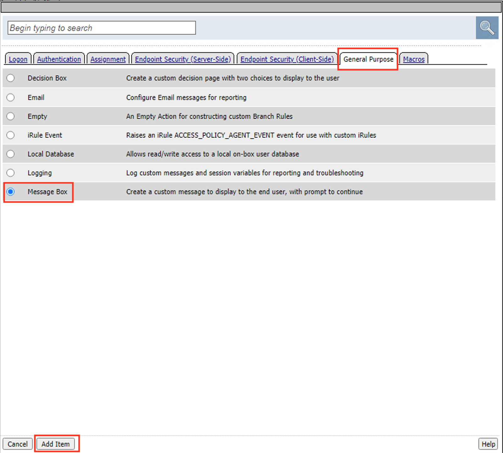

F5 Identity and Access Management Solutions > Archived Identity & Access Management Labs > Class 3: SWG - Securing Outbound Internet Access Source | Edit on
Lab 1: SWG iApp – Explicit Proxy for HTTP and HTTPS¶
In this lab exercise, you will learn how to automate and simplify a deployment of SWG using an iApp template.
Estimated completion time: 30 minutes
Objectives:
- Create an Explicit Proxy configuration by deploying the SWG iApp template
- Test web browsing behavior
Lab Requirements:
- BIG-IP with SWG licensed
- BIG-IP must have access to the public Internet
- BIG-IP must have access to a DNS server that can resolve queries for public Internet web site names
- The latest iApp for SWG can be downloaded from https://downloads.f5.com/ (browse to BIG-IP iApp Templates) Note: The iApp has already been downloaded and imported for you.
Before you can deploy the SWG iApp template, you must have the following objects configured:
- AD AAA server
- SWG-Explicit Access Policy
- Custom URL Filter
- Per-Request Access Policy
Task 1 – Create an “SWG-Explicit” Access Policy for Authentication¶
Create an AD AAA Server¶
Create an AD AAA server by selecting Access >> Authentication >> Active Directory and clicking on Create…
Change the Name to AD_F5DEMO
Change the Domain Name to f5demo.com
Change Server Connection to Direct
Change the Domain Controller to 10.1.20.20
Click Finished

Create a Per-Session Access Policy¶
Browse to Access >> Profiles / Policies >> Access Profiles (Per-Session Policies) and click Create…*
Name the profile AP_Explicit_Auth
Change the Profile Type to SWG-Explicit
Add English to the Accepted Languages list
Accept all other default settings and click Finished
Click on the Edit… link for the appropriate Access Policy created above

Select the + between Start and Deny and Add an HTTP 407 Response object

Change the HTTP Auth Level to basic

Click Save
On the Basic branch of the HTTP 407 Object, Add an AD Auth Object

Change the Server to /Common/AD_F5DEMO and change Show Extended Error to Enabled

Click Save
On the Successful branch of the AD Auth Object, click on the Deny Ending and change it to Allow
Click Save
Click on the Apply Access Policy link

Task 2 – Create a custom URL Filter¶
Browse to Access >> Secure Web Gateway >> URL Filters and click Create…
Name your filter LAB_URL_FILTER and click Finished
Click on the first check box to select all categories

Click Allow at the bottom of the page

Click the check box to select Social Web – Facebook and then click Block (for this lab, our URL filter will only block Facebook)

Task 3 – Create a “Per-Request” Access Policy¶
Browse to Access >> Profiles / Policies >> Per-Request Policies and click Create…
Name your policy Lab_Per_Request
Click Finished
Click on the Edit… link for the appropriate Per-Request Policy created above, then go back to the VPE tab in your browser

Click on the + symbol between Start and Allow
Go to the General Purpose tab and add a Protocol Lookup object

Click Add Item
Click Save
On the HTTPS branch, click the + and Add a Category Lookup object (General Purpose tab)

Select Use SNI in Client Hello for Categorization Input
Click Save
After the Category Lookup, Add a URL Filter Assign Object (from the General Purpose tab) and choose URL Filter /Common/LAB_URL_FILTER

Important
Change the Ending of the Allow outcome on the “fallback” branch from “Reject” to Allow

Task 4 – Create Explicit Proxy Configuration using the SWG iApp¶
Import the SWG iApp template into the BIG-IP – Note: This has been done for you.¶
- In the BIG-IP Management UI, browse to iApps >> Templates and click Import…
- Click Choose File or Browse… and select the iApp file (at the time of writing the current version is 1.1.0rc4 (f5.secure_web_gateway.v1.1.0rc4.tmpl).
- Click Open and Upload
Create a SWG proxy configuration¶
Browse to iApps >> Application Services
Click Create…
Change the name to SWG
Change the Template to f5.secure_web_gateway.v1.1.0rc4 (your version may be newer)
Answer the questions as follows:
Question | Answer Do you want to see inline help? | Yes, show inline help Do you want to enable advanced options? No, do not enable advanced options Which type of SWG configuration do you want to deploy Explicit Proxy Do you want to use ICAP to forward requests for inspection by DLP servers? No, do not use ICAP for DLP What IP address and port do you want to use for the virtual server? - IP Address: 10.1.20.200
- Port: 3128
What is the FQDN of this proxy? proxy.f5demo.com. The local hosts file on your Jump Host has already been modified to resolve this FQDN to the correct IP address indicated above. On which ports should the system accept HTTP traffic? 80 On which ports should the system accept HTTPS traffic? 443 Which SWG-Explicit Access Policy do you want to use? AP_Explicit_Auth Which Per-Request Access Policy do you want to use? Lab_Per_Request Do you want the system to forward all name requests? Yes, forward all name requests Which DNS servers do you want to use for forwarding? - IP: 10.1.20.20
- Port: 53
Which SSL profile do you want to use for client-side connections? Create a new Client SSL profile Which Subordinate CA certificate do you want to use? f5agility.crt Which CA key do you want to use? f5agility.key Does the key require a password? If so, type it here F5labs Which SSL profile do you want to use for server-side connections? Create a new Server SSL profile Click Finished – you will see a large number of objects created for you on the Components tab.
Task 5 – Verify that the “F5 Agility CA” certificate is trusted¶
A Windows Domain Group Policy was configured to deploy the CA certificate that SWG uses to forge new certificates (on behalf of the origin server) to domain-joined machines.
Open Internet Explorer on your Jump Host client machine
Click the gear icon or hit
Alt-Xand select Internet options
Go to the Content tab and click Certificates
Click on the Trusted Root Certification Authorities tab and scroll down. You should see the F5 Agility CA certificate in the list.

Double-click on the certificate to view its properties, then close this window and the Certificates window.
Task 6 – Testing¶
Configure your browser with a “Proxy Server”¶
Go to the Connections tab and click LAN settings
Enable the checkbox for Use a proxy server for your LAN and enter:
- Address: 10.1.20.200
- Port: 3128
Click OK twice.

Test 1:¶
Open a new Internet Explorer “InPrivate” browser window on your Jump Host client machine
Browse to https://www.google.com

The browser should prompt you for authentication. Submit your credentials:
- User:
user1 - Password:
AgilityRocks!
- User:
Verify defined user has an Access Session ID
Browse to Access > Overview > Active Sessions

Test 2:¶
Using an InPrivate browser window from the client test machine, go to https://www.google.com and verify the SSL certificate is signed by the F5 Agility CA you configured in Lab 1

Using an InPrivate browser window from the client test machine, go to https://www.wellsfargo.com and examine the certificate to verify that it is signed by the same F5 Agility CA you configured in Lab 1

Test 3:¶
Using an InPrivate browser window from the client test machine, go to https://www.facebook.com and verify that you are instead delivered a SWG Block Page, in accordance to the URL Filter you configured above.
